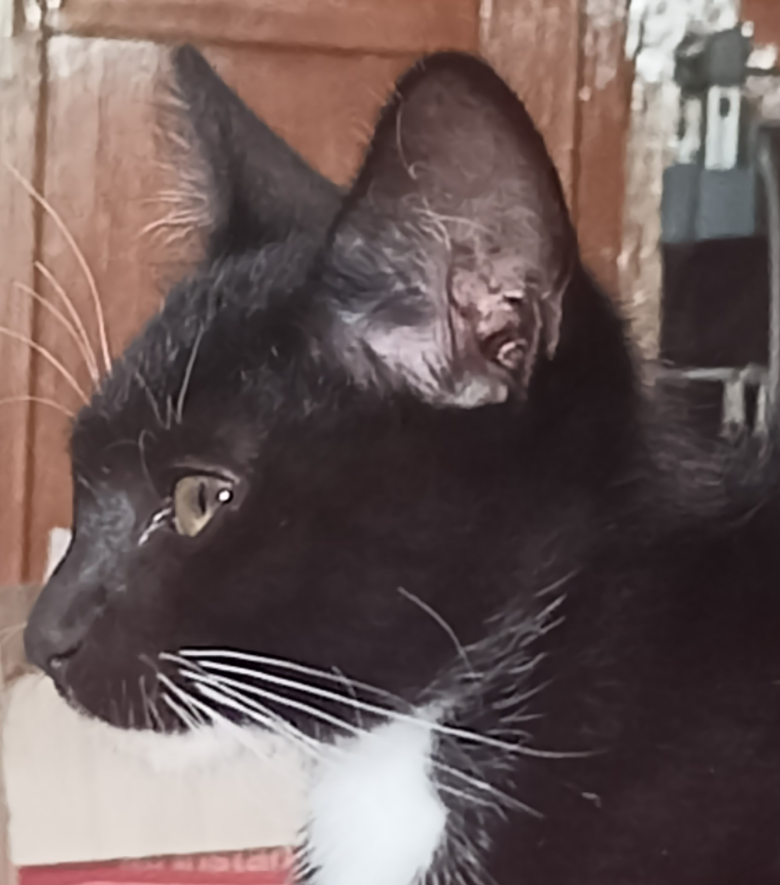
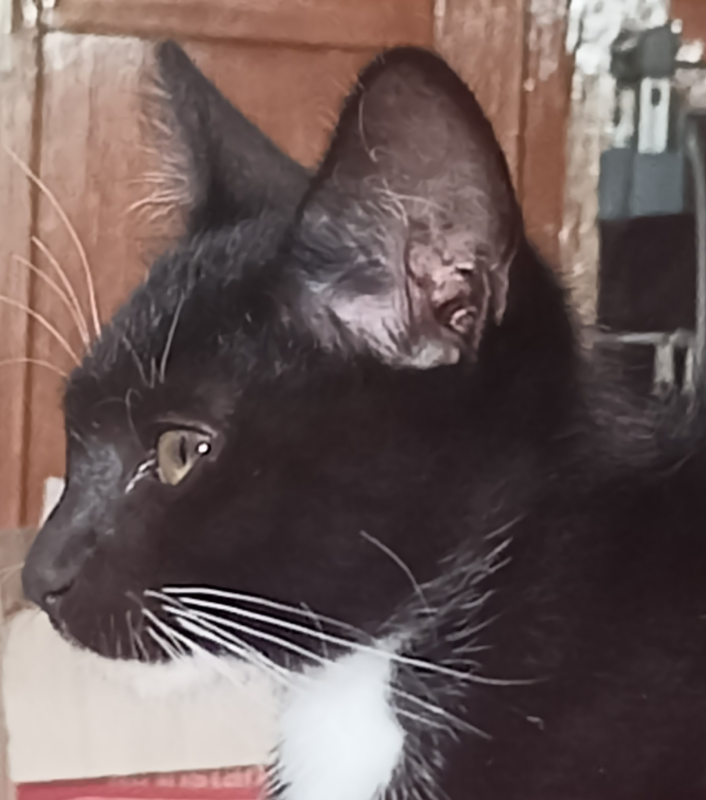

About My Cat
Berisi tentang kucing yang pernah saya rawat.
Website ini berisi tentang kucing. Website ini dibuat sebagai bentuk kecintaan penulis terhadap kucing. Penulis akan menceritakan sedikit mengenai kucing yang di milikinya dan beberapa hal yang masih menyangkut tentang kucing berdasarkan pengalaman dan pengetahuan yang dimiliki penulis.

Berisi tentang kucing yang pernah saya rawat.
Beberapa kebiasaan yang sering dilakukan kucing.
Tentang kandungan makanan yang cocok dan baik untuk kucing.
Product "Cat Food" Terbaik menurut penulis.
Saya pernah memiliki beberapa kucing. Hampir setiap tahun jumlah kucingnya berubah, bisa bertambah maupun berkurang. Entah itu bertambah karena berkembang biak ataupun berkurang karena ada beberapa yang hilang atau mati. Saya hanya memelihara kucing domistic/kucing jalanan.

bagi kucing, menggoyang-goyangkan ekornya bisa jadi indikasi bahwa mereka merasa terganggu, risih, dan geram saat di dekatmu.
Ada beberapa makanan yang memiliki kandungan yang bermanfaat untuk kucing. Kandungan makanan tersebut biasanya sudah diolah menjadi bentuk khusus untuk makanan kucing sehingga takaran yang dibutuhkan nya sudah sesuai.
Ayam mengandung vitamin dan mineral seperti vitamin B6, niacin, fosfor, dan selenium yang dibutuhkan kucing untuk menjaga sistem kekebalan tubuhnya menjadi lebih kuat.

daging domba adalah daging yang berasal dari domba yang berumur kurang dari satu tahun. Mengandung protein, niasin, zat besi, zinc, serta vitamin B2 dan B12 yang baik untuk kucing.
Dengan kandungan utama berupa asam lemak omega-3, salmon dapat membantu mempercantik bulu, mengurangi risiko radang sendi, hingga menjaga perkembangan otak dan fungsi kognitif kucing.
Tuna merupakan ikan laut yang tinggi omega-3 dan juga kaya akan vitamin D yang baik untuk kesehatan tulang kucing. Tuna juga mengandung vitamin A yang dapat membantu menjaga kesehatan mata
Produk makanan kucing yang pernah saya coba dan cocok untuk kebutuhan kucing.
Cocok untuk pertumbuhan kucing dewasa.

Lumayan terkenal di kalangan pecinta kucing, namun kucing saya tidak terlalu suka
kucing saya suka, tapi saya yang tidak suka harganya
Sejauh ini, makanan yang kucing saya suka dan konsisten adalah cat choize. Cat food ini juga bagus untuk bulu dan juga pencernaan
Favorite kedua kucing saya. Bagus untuk bulu, selain itu tekstur makanan nya juga lebih halus
Favorite semua kucing saya. Lebih lengkap bila makanan wet food dicampurkan dengan dryfood sehingga kucing bisa merasa puas.
Beberapa Potret kucing saya.
 


Hubungi jika membutuhkan info lebih lanjut maupun jika ada kepentingan.